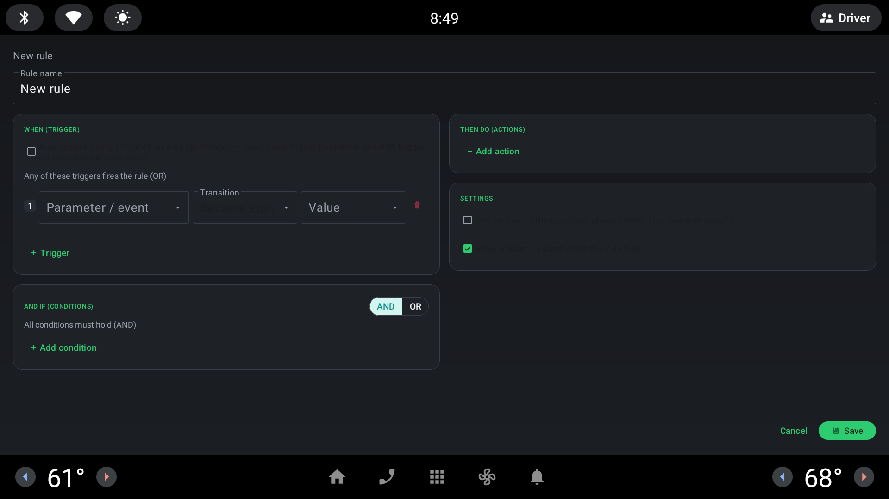
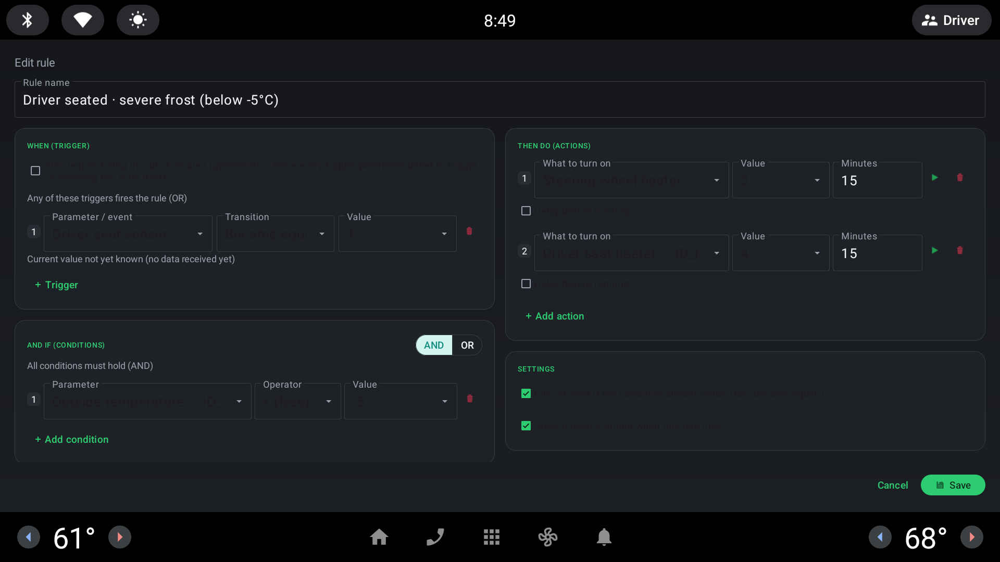
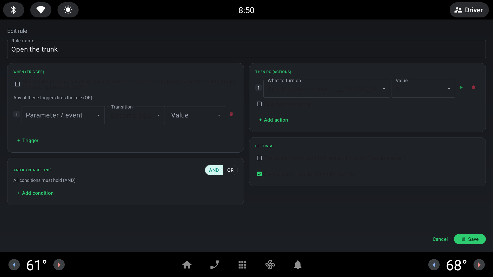
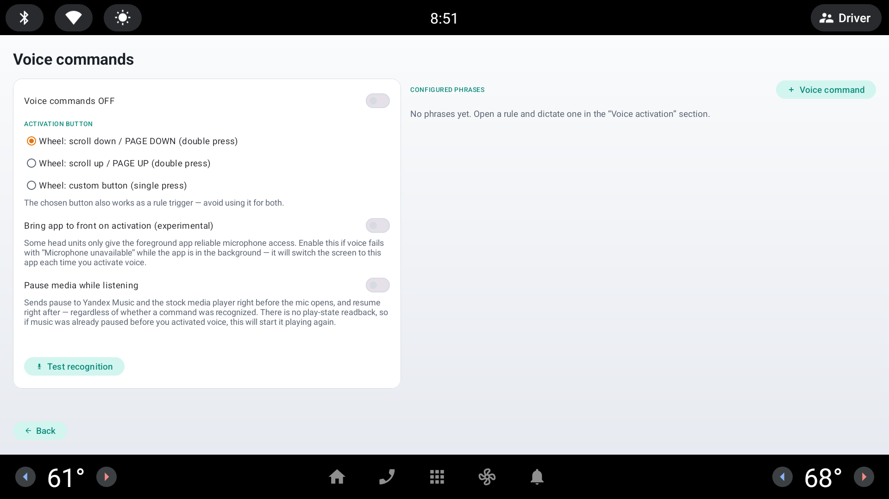
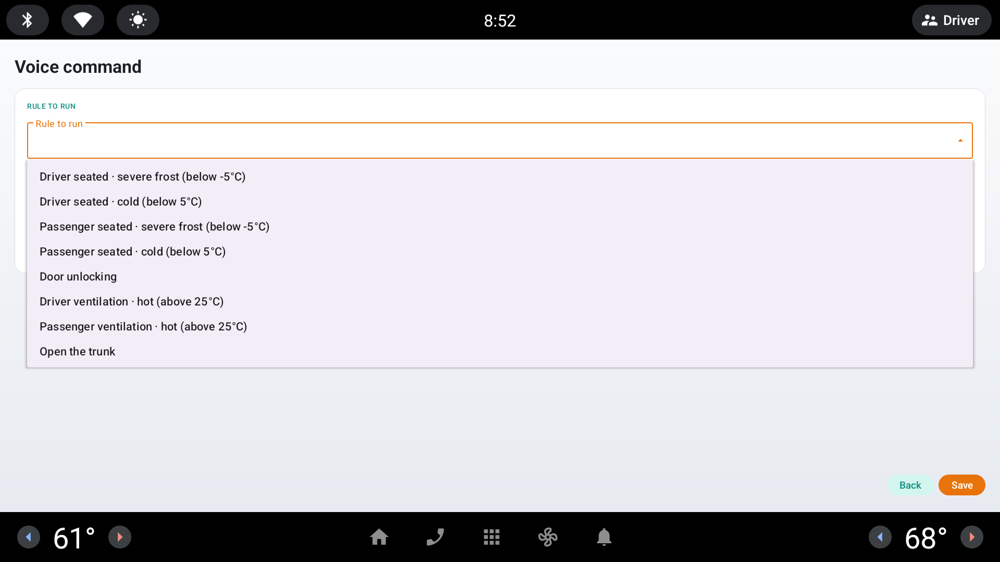
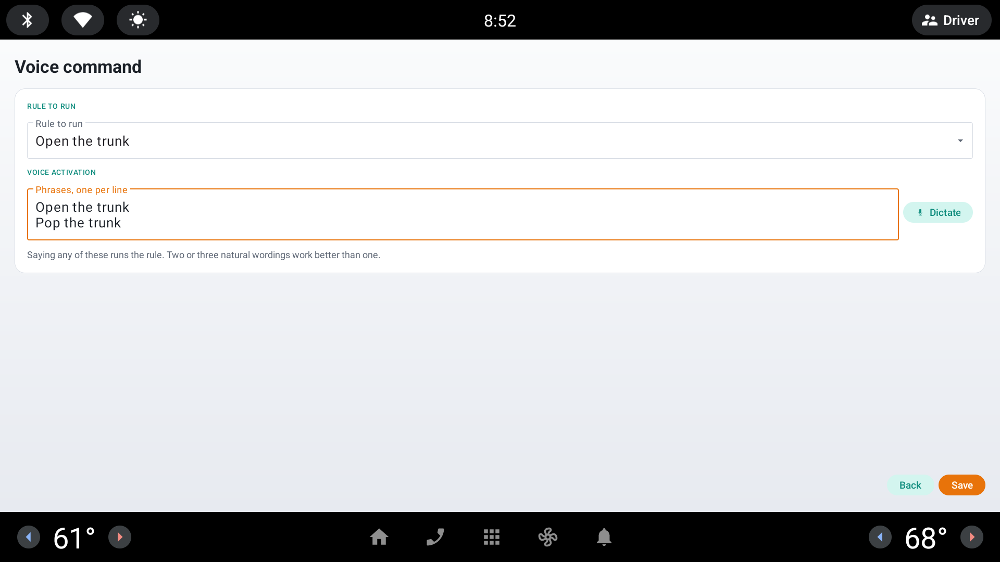
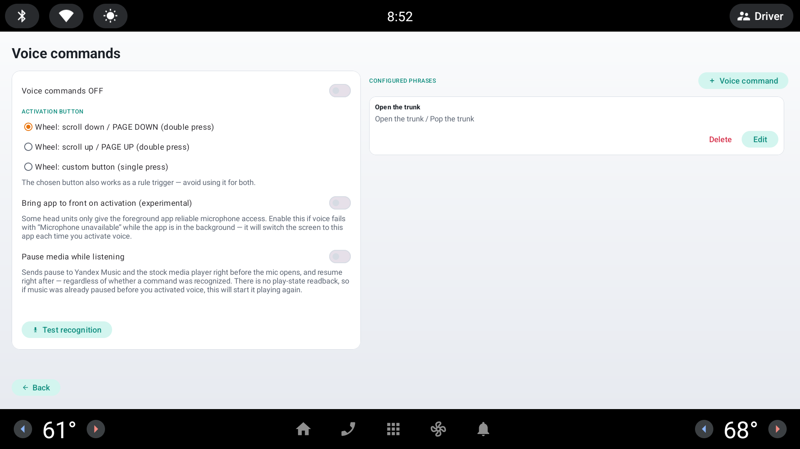

Подробная пошаговая инструкция со скриншотами: как собрать правило с нуля на двух примерах и как назначить ему голосовую фразу. Общий обзор экранов и полный список параметров/действий — на главной странице; здесь — только практика.
Любое правило — это:
КОГДА что-то произошло (триггер) → И ЕСЛИ выполняются условия → ТО выполнить действия.
Триггер — это переход («стало равно», «изменилось», «возросло», «уменьшилось»): срабатывает один раз, в момент смены значения. Условие — это то, что должно быть верно прямо сейчас, в момент срабатывания триггера («температура ниже −5°C» верно или нет здесь и сейчас, а не когда-то). Экран редактора разделён по этому же принципу: слева — «КОГДА» (триггеры + условия), справа — «ТОГДА» (действия) и настройки самого правила.
1. На главном экране нажмите «+ Правило». Откроется пустой редактор:

Пустой редактор: имя, пустой блок «КОГДА» с одной строкой триггера, пустой блок «И ЕСЛИ», справа — «ТОГДА» и «Настройки».2. Введите название — оно просто для вас, ни на что не влияет.
3. «Когда (триггер)»: выберите параметр или событие, тип перехода и значение. Под полем показывается живое значение параметра — сверяйтесь с ним, если не уверены в кодировке (например, «занято» может быть и «1», и другим числом в зависимости от датчика). Кнопка «+ Триггер» добавляет ещё один — сработает любой из них (ИЛИ). Можно вообще не добавлять ни одного триггера — см. Пример 2 ниже.
4. «И если» (условия): переключатель И/ИЛИ определяет, нужны ли все условия сразу (И, по умолчанию) или достаточно любого одного (ИЛИ). Кнопка «+ Условие» добавляет строку: параметр, оператор сравнения, значение.
5. «Тогда (действия)»: что включить и на какое значение. Поле «Минут» — автовыключение (переживает перезагрузку магнитолы); галочка «Задержка перед выполнением» — выполнить не сразу, а через N секунд после срабатывания. Зелёная кнопка ▶ рядом с действием выполняет его прямо сейчас, для проверки.
6. «Настройки» справа: «Сработать при старте, если условие уже верно» — правило дополнительно проверяется один раз при запуске программы (полезно, если магнитола загрузилась, когда водитель уже сидит на месте); «Показывать тост + звук при срабатывании» — отключите, если правило должно работать тихо, без всплывающего уведомления.
7. «Сохранить».
Классический автоматический случай — одно из готовых правил приложения:

«Driver seated · severe frost»: когда датчик сиденья водителя стал «занято», и если за бортом ниже −5°C — включить подогрев руля (ур. 3) и сиденья (макс.) на 15 минут.Разбор: триггер «Датчик сиденья водителя» → «Стало равно» → «1» (занято) — сработает именно в момент посадки, а не всё время, пока водитель сидит. Условие «Температура за бортом» < −5 — проверяется именно в тот момент. Оба действия получают «Минут» = 15, то есть через 15 минут подогрев сам выключится.
Правило не обязано ничего слушать само — если оставить «Когда» и «И если» пустыми, оно никогда не сработает автоматически, но остаётся полностью рабочим по кнопке «▶» в списке правил, с плавающей панели или по голосовой команде. Это — правильный способ сделать разовое действие «по требованию»:

«Open the trunk»: блок «Когда» и «И если» пустые (кнопка «+ Триггер»/«+ Условие», ни одной строки), единственное действие — «Багажник: открыть/закрыть» = «Открыть».Именно такие правила чаще всего имеет смысл привязывать к голосовым командам — дальше разберём это на этом же примере.
Голосовое управление — платная функция (активация под конкретный VIN, подробности и цена — на главной странице). Дальше предполагается, что активация уже пройдена.
1. На главном экране нажмите «Голос». Откроется экран настроек: общий переключатель, кнопка активации на руле, список уже настроенных фраз справа.

Экран «Голосовые команды»: включение, выбор кнопки активации на руле, «Пауза медиа во время прослушивания», справа — список фраз и «+ Голосовая команда».2. Нажмите «+ Голосовая команда» и выберите правило из выпадающего списка — все ваши правила уже там, по названию:

Выпадающий список «Правило для запуска» — здесь выбран пример «Open the trunk».3. Введите одну или несколько фраз, по одной на строку — сработает любая из них. Кнопка «Диктовать» позволяет наговорить фразу вместо набора на клавиатуре (удобно для кириллицы/фарси на магнитоле).

Две фразы-синонима для одного правила: «Open the trunk» и «Pop the trunk».4. «Сохранить». Команда появится в списке справа:

Готово: правило и список его фраз — сразу видно, что к чему привязано.Чтобы воспользоваться: нажмите выбранную кнопку на руле (двойной клик скролла вверх/вниз или одиночный клик кастомной кнопки — что выбрано в настройках), дождитесь звукового сигнала «слушаю» и произнесите одну из фраз.
Важно: голосовая команда пропускает сам триггер правила (неважно, что там настроено), но условия по-прежнему проверяются. Если у правила есть условие, а оно сейчас не выполняется — правило не сработает, в журнале появится запись «условия не выполнены». Для правил, которые должны срабатывать по голосу всегда, — как в Примере 2 — просто не добавляйте условий вообще.
1) Переключатель правила включён в списке. 2) Триггер настроен на реальный переход, а не «уже случившееся состояние» — например, «Стало равно 1» сработает только в момент, когда значение меняется на 1, а не всё время, пока оно уже равно 1 (для этого случая есть отдельная опция «Сработать при старте»). 3) Сверьте кодировку значения с живым значением, показанным под полем триггера — коды перечислений могут отличаться в другой комплектации.
Распознавание полностью офлайн и зависит от языка установленного APK (ru/en/fa) — убедитесь, что говорите на языке установленной версии. Проверьте микрофон кнопкой «Проверить распознавание» на экране настроек. Если это происходит только когда приложение свёрнуто — включите «Bring app to front on activation» («вывести приложение на передний план при активации»): некоторые магнитолы дают надёжный доступ к микрофону только переднему приложению.
Скорее всего, у правила есть условие, которое сейчас не выполняется — см. блок «Важно» выше. Голос запускает правило как обычное срабатывание (с проверкой условий), а не как безусловное нажатие кнопки.
Одна голосовая команда — это одно правило плюс список фраз-синонимов для него («открой багажник» / «подними багажник» и т.п. — любая сработает). Обратное — нельзя: одна фраза не может быть привязана сразу к двум разным правилам.
Это включена опция «Пауза медиа во время прослушивания» (экран настроек голоса): она безусловно ставит на паузу перед открытием микрофона и включает обратно после — без проверки, играло ли что-то на самом деле до этого. Если музыка уже была на паузе до активации, эта опция её включит. Отключите опцию, если это мешает.
Технически да, но не стоит — выбранная кнопка активации голоса перестаёт доходить до обычной логики правил как отдельное нажатие, пока голос её перехватывает. Экран настроек голоса сам предупреждает об этом.
Триггер — это фронт, момент изменения; правило проверяется ровно один раз, в момент этого перехода. Условие — это уровень, состояние, которое просто должно быть верным в момент проверки (сработавшего триггера, ручного запуска, голоса). Один и тот же параметр можно использовать и там, и там одновременно в разных ролях (см. Пример 1: датчик сиденья — триггер, температура — условие).
Они всегда работают как ИЛИ — сработает любой из них. Для условий, в отличие от триггеров, режим И/ИЛИ можно переключить.
Одна: 16-значный код, привязанный к VIN, активирует обе платные функции сразу. Подробности — на главной странице.
Такого быть не должно: автовыключение по «Минут» хранится на диске и планируется через системный будильник (AlarmManager) — оно переживает перезагрузку и досрочно применяется, если время уже вышло к моменту старта. Если это всё же не срабатывает — похоже на баг, опишите его разработчику.
A detailed, step-by-step guide with screenshots: building a rule from scratch through two worked examples, then attaching a voice phrase to one. The screen-by-screen overview and the full parameter/action reference tables live on the main page; this page is pure hands-on practice.
Every rule is:
WHEN something happens (a trigger) → AND IF conditions hold → THEN run actions.
A trigger is a transition ("became equal", "changed", "increased", "decreased") — it fires once, at the moment the value changes. A condition is something that must be true right now, at the moment the trigger fires ("outside temperature is below −5°C" is either true or false at that instant, not some other time). The editor screen mirrors this split: the left column is "WHEN" (triggers + conditions), the right column is "THEN" (actions) plus the rule's own settings.
1. On the main screen, tap "+ Rule". An empty editor opens:
2. Type a name — it's for you only, it has no effect on behavior.
3. "When (trigger)": pick a parameter or event, a transition type, and a value. The live value shown under the field is there to check against — enum encodings can vary by trim level. "+ Trigger" adds another one — any of them firing starts evaluation (OR). You can also leave this with zero triggers entirely — see Example 2 below.
4. "And if" (conditions): the AND/OR toggle decides whether all conditions must hold at once (AND, default) or any single one is enough (OR). "+ Condition" adds a row: parameter, comparison operator, value.
5. "Then do" (actions): what to set and to which value. "Minutes" is auto-off (survives a head-unit reboot); the "Delay before running" checkbox runs the action N seconds after the rule fires instead of immediately. The green ▶ button next to an action runs it right now, for testing.
6. "Settings" on the right: "Fire on start if the condition already holds" — the rule is additionally checked once when the app starts (useful if the head unit boots with the driver already seated); "Show a toast + sound when this rule fires" — turn this off if the rule should run silently, with no popup.
7. "Save".
The classic automatic case — one of the app's own built-in rules:
Breakdown: trigger "Driver seat sensor" → "Became equal" → "1" (occupied) — fires exactly at the moment of sitting down, not for the whole time the seat stays occupied. Condition "Outside temperature" < −5 is checked at that exact moment. Both actions get "Minutes" = 15, so the heaters switch themselves off 15 minutes later.
A rule doesn't have to listen for anything on its own — leaving both "When" and "And if" empty means it never fires automatically, but it's still fully usable via the "▶" button in the rule list, from the floating panel, or by voice command. This is the right way to build a one-off, on-demand action:
Rules built exactly like this are usually the best candidates for a voice command — that's what the next section walks through, using this same example.
Voice control is a paid feature (per-VIN activation — pricing and details are on the main page). The rest of this section assumes activation is already done.
1. On the main screen, tap "Voice". The settings screen opens: a master switch, the wheel activation button picker, and the list of already-configured phrases on the right.
2. Tap "+ Voice command" and pick a rule from the dropdown — every rule you have is already listed there, by name:
3. Type one or more phrases, one per line — any of them will match. The "Dictate" button lets you speak the phrase instead of typing it (handy for Cyrillic or Persian on a head-unit keyboard).
4. "Save". The command now appears in the list on the right:
To use it: press the chosen wheel button (double-press the up/down scroll wheel, or a single press of the custom button — whichever is picked in settings), wait for the "listening" tone, and say one of the phrases.
Important: a voice command skips the rule's own trigger entirely (whatever it's set to doesn't matter), but its conditions are still checked. If the rule has a condition and it doesn't currently hold, the rule will not fire — the journal logs "conditions failed". For rules that should always run by voice — like Example 2 — simply don't add any conditions at all.
1) The rule's toggle is on in the list. 2) The trigger is set to an actual transition, not an "already-true state" — e.g. "Became equal to 1" only fires at the moment the value changes to 1, not for the whole time it's already 1 (that's what the separate "Fire on start" option is for). 3) Compare the value you typed against the live value shown under the trigger field — enum encodings can differ by trim level.
Recognition is fully offline and tied to the installed APK's language (ru/en/fa) — make sure you're speaking the language of the version you installed. Check the mic with "Test recognition" on the settings screen. If it only fails while the app is backgrounded, enable "Bring app to front on activation" — some head units only give the foreground app reliable microphone access.
The rule most likely has a condition that isn't currently true — see the "Important" box above. Voice runs the rule like a normal firing (conditions checked), not like an unconditional button press.
One voice command is one rule plus a list of synonym phrases for it ("open the trunk" / "pop the trunk" and so on — any of them work). The reverse isn't possible: one phrase can't be bound to two different rules at once.
That's the "Pause media while listening" option (voice settings screen): it unconditionally pauses before the mic opens and resumes right after — with no check for whether anything was actually playing beforehand. If music was already paused before you activated voice, this option will start it playing. Turn the option off if that's a problem.
Technically yes, but it isn't a good idea — while voice is intercepting that button, its presses stop reaching the ordinary rule-trigger logic as a separate event. The voice settings screen warns about exactly this.
A trigger is an edge — the moment of change; the rule is checked exactly once, at that transition. A condition is a level — a state that simply has to be true at the moment of checking (a fired trigger, a manual run, a voice command). The same parameter can be used in both roles at once, in different rows (see Example 1: the seat sensor is the trigger, the temperature is the condition).
They always combine as OR — any one of them firing is enough. Conditions, unlike triggers, can be switched between AND and OR with the toggle.
One: a single 16-digit, VIN-bound code activates both paid features at once. Details are on the main page.
It should have: auto-off timers are persisted to disk and scheduled through the system alarm manager, so they survive a reboot and are applied immediately if their time already passed by the time the app restarts. If that's genuinely not happening, it looks like a bug — please report it to the developer.
راهنمای گامبهگام و مصور: ساخت یک قانون از صفر با دو مثال کامل، سپس اختصاص یک عبارت صوتی به یکی از آنها. مرور کلی صفحات و جدول کامل پارامترها/عملیات در صفحهٔ اصلی است؛ این صفحه فقط تمرین عملی است.
هر قانون اینگونه است:
هنگامی که اتفاقی رخ میدهد (محرک) ← و اگر شرطها برقرار باشند ← آنگاه عملیات اجرا شود.
محرک یک گذار است («برابر شد»، «تغییر کرد»، «افزایش یافت»، «کاهش یافت») — فقط یکبار، در لحظهٔ تغییر مقدار اجرا میشود. شرط چیزی است که باید همین الان، در لحظهٔ اجرای محرک، درست باشد («دمای بیرون کمتر از −۵ درجه» یا درست است یا نه، دقیقاً همان لحظه). صفحهٔ ویرایشگر هم دقیقاً همین تقسیمبندی را دارد: ستون چپ «هنگامی که» (محرکها + شرطها)، ستون راست «آنگاه» (عملیات) بههمراه تنظیمات خود قانون.
۱. در صفحهٔ اصلی روی «+ قانون» بزنید. یک ویرایشگر خالی باز میشود:
۲. یک نام تایپ کنید — فقط برای خودتان است و روی رفتار قانون تأثیری ندارد.
۳. «هنگامی که (محرک)»: یک پارامتر یا رویداد، نوع گذار و یک مقدار انتخاب کنید. مقدار زندهٔ نمایشدادهشده زیر فیلد برای مقایسه است — کدگذاری enum ممکن است بسته به تریم خودرو فرق کند. «+ محرک» یک ردیف دیگر اضافه میکند — اجرای هر یک از آنها کافی است (یا). میتوانید این بخش را کاملاً بدون هیچ محرکی هم بگذارید — مثال ۲ را پایینتر ببینید.
۴. «و اگر» (شرطها): کلید و/یا تعیین میکند که همهٔ شرطها باید همزمان برقرار باشند (و، پیشفرض) یا برقراری هرکدام کافی است (یا). «+ شرط» یک ردیف اضافه میکند: پارامتر، عملگر مقایسه، مقدار.
۵. «آنگاه انجام بده (عملیات)»: چه چیزی روشن شود و روی چه مقداری. «دقیقه» یعنی خاموشی خودکار (پس از ریاستارت هدیونیت هم باقی میماند)؛ چکباکس «تأخیر پیش از اجرا» عملیات را N ثانیه پس از اجرای قانون، نه بلافاصله، اجرا میکند. دکمهٔ سبز ▶ کنار هر عملیات آن را همین حالا، برای آزمایش، اجرا میکند.
۶. «تنظیمات» در سمت راست: «اجرا هنگام شروع اگر شرط از پیش برقرار است» — قانون یکبار دیگر هم هنگام اجرای برنامه بررسی میشود (مفید وقتی هدیونیت درحالیکه راننده از قبل نشسته روشن میشود)؛ «نمایش پیام + صدا هنگام اجرای این قانون» — اگر میخواهید قانون بیصدا و بدون پیام اجرا شود، آن را خاموش کنید.
۷. «ذخیره».
حالت خودکار کلاسیک — یکی از قانونهای پیشفرض خود برنامه:
تحلیل: محرک «سنسور صندلی راننده» ← «برابر شد» ← «۱» (اشغال) — دقیقاً در لحظهٔ نشستن اجرا میشود، نه در تمام مدتی که صندلی اشغال است. شرط «دمای بیرون» < −۵ دقیقاً همان لحظه بررسی میشود. هر دو عملیات «دقیقه» = ۱۵ دارند، یعنی گرمکنها خودشان پس از ۱۵ دقیقه خاموش میشوند.
یک قانون لازم نیست خودش منتظر چیزی بماند — اگر «هنگامی که» و «و اگر» را خالی بگذارید، هرگز بهطور خودکار اجرا نمیشود، اما همچنان کاملاً از طریق دکمهٔ «▶» در فهرست قانونها، از پنل شناور یا با فرمان صوتی قابلاستفاده است. این روش درست ساخت یک عملیات یکباره و «برحسب تقاضا» است:
قانونهایی دقیقاً به همین شکل معمولاً بهترین گزینه برای فرمان صوتی هستند — بخش بعدی با همین مثال این موضوع را نشان میدهد.
کنترل صوتی یک قابلیت پولی است (فعالسازی بر اساس VIN — قیمت و جزئیات در صفحهٔ اصلی). ادامهٔ این بخش فرض میکند فعالسازی قبلاً انجام شده است.
۱. در صفحهٔ اصلی روی «صدا» بزنید. صفحهٔ تنظیمات باز میشود: کلید اصلی، انتخاب دکمهٔ فعالسازی روی فرمان، و فهرست عبارتهای از پیش تنظیمشده در سمت راست.
۲. روی «+ فرمان صوتی» بزنید و یک قانون از فهرست کشویی انتخاب کنید — همهٔ قانونهای شما از قبل با نام آنجا هستند:
۳. یک یا چند عبارت وارد کنید، هرکدام در یک خط — هرکدام از آنها کار میکند. دکمهٔ «ضبط صدا» به شما اجازه میدهد بهجای تایپ، عبارت را با صدا بگویید (برای تایپ فارسی یا روسی روی صفحهکلید هدیونیت مفید است).
۴. «ذخیره». فرمان اکنون در فهرست سمت راست ظاهر میشود:
برای استفاده: دکمهٔ انتخابشدهٔ روی فرمان را فشار دهید (دوبار فشردن غلتک بالا/پایین، یا یکبار فشردن دکمهٔ سفارشی — هرکدام که در تنظیمات انتخاب شده)، منتظر بوق «در حال گوش دادن» بمانید و یکی از عبارتها را بگویید.
نکتهٔ مهم: فرمان صوتی محرک خود قانون را کاملاً نادیده میگیرد (هرچه تنظیم شده باشد فرقی نمیکند)، اما شرطها همچنان بررسی میشوند. اگر قانون شرطی داشته باشد که همین الان برقرار نیست، قانون اجرا نخواهد شد — در گزارش «شرطها برقرار نشد» ثبت میشود. برای قانونهایی که باید همیشه با صدا اجرا شوند — مثل مثال ۲ — کافی است اصلاً هیچ شرطی اضافه نکنید.
۱) کلید قانون در فهرست روشن است. ۲) محرک روی یک گذار واقعی تنظیم شده، نه یک «وضعیت از پیش برقرار» — مثلاً «برابر شد با ۱» فقط در لحظهای که مقدار به ۱ تغییر میکند اجرا میشود، نه در تمام مدتی که از قبل ۱ است (برای آن حالت گزینهٔ جداگانهٔ «اجرا هنگام شروع» وجود دارد). ۳) مقداری که تایپ کردهاید را با مقدار زندهٔ زیر فیلد محرک مقایسه کنید — کدگذاری enum ممکن است بسته به تریم فرق کند.
شناسایی کاملاً آفلاین و وابسته به زبان نسخهٔ نصبشدهٔ APK (ru/en/fa) است — مطمئن شوید به زبان همان نسخه صحبت میکنید. میکروفون را با «آزمایش شناسایی» در صفحهٔ تنظیمات بررسی کنید. اگر فقط وقتی برنامه در پسزمینه است شکست میخورد، «انتقال برنامه به جلو هنگام فعالسازی» را روشن کنید — برخی هدیونیتها فقط به برنامهٔ جلویی دسترسی میکروفون قابلاعتماد میدهند.
به احتمال زیاد قانون شرطی دارد که همین الان درست نیست — به کادر «نکتهٔ مهم» بالا نگاه کنید. صدا قانون را مثل یک اجرای معمولی (با بررسی شرطها) اجرا میکند، نه مثل فشردن بیقیدوشرط یک دکمه.
یک فرمان صوتی یعنی یک قانون بههمراه فهرستی از عبارتهای مترادف برای آن («باز کن صندوق را» / «صندوق را باز کن» و مانند آن — هرکدام کار میکند). برعکسش ممکن نیست: یک عبارت نمیتواند همزمان به دو قانون مختلف متصل باشد.
این گزینهٔ «توقف رسانه هنگام گوش دادن» است (صفحهٔ تنظیمات صدا): پیش از باز شدن میکروفون بدون قیدوشرط توقف میکند و بلافاصله پس از آن دوباره پخش میکند — بدون بررسی اینکه واقعاً چیزی از قبل در حال پخش بوده یا نه. اگر موسیقی از قبل متوقف بوده، این گزینه آن را پخش میکند. اگر مشکلساز است، گزینه را خاموش کنید.
از نظر فنی بله، اما توصیه نمیشود — تا وقتی صدا آن دکمه را میقاپد، فشردنهای آن دیگر بهعنوان یک رویداد جدا به منطق معمول محرک قانون نمیرسد. صفحهٔ تنظیمات صدا خودش دربارهٔ همین موضوع هشدار میدهد.
محرک یک لبه است — لحظهٔ تغییر؛ قانون دقیقاً یکبار، در همان گذار، بررسی میشود. شرط یک سطح است — وضعیتی که فقط باید در لحظهٔ بررسی (یک محرک اجراشده، اجرای دستی، فرمان صوتی) درست باشد. همان پارامتر میتواند همزمان در هر دو نقش، در دو ردیف جدا، استفاده شود (مثال ۱ را ببینید: سنسور صندلی محرک است، دما شرط).
همیشه بهصورت «یا» ترکیب میشوند — اجرای هرکدام کافی است. برخلاف محرکها، شرطها را میتوان با کلید بین «و» و «یا» جابهجا کرد.
یکی: یک کد ۱۶ رقمی متصل به VIN هر دو قابلیت پولی را همزمان فعال میکند. جزئیات در صفحهٔ اصلی است.
نباید اینطور میشد: تایمرهای خاموشی خودکار روی دیسک ذخیره و از طریق زمانبند سیستمی برنامهریزی میشوند، پس ریاستارت را پشت سر میگذارند و اگر زمانشان تا لحظهٔ راهاندازی مجدد برنامه گذشته باشد، بلافاصله اعمال میشوند. اگر واقعاً اینطور نیست، به نظر میرسد یک باگ است — لطفاً آن را به توسعهدهنده گزارش دهید.